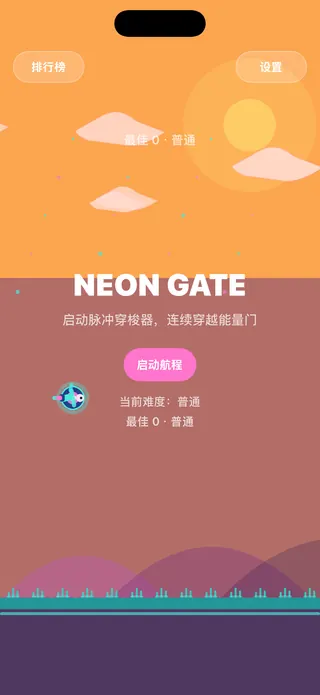
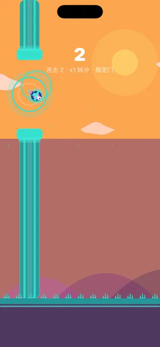
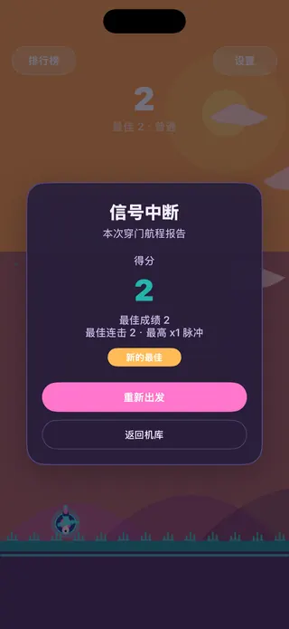

代码绘制的场景
小鸟、云朵、山丘、地面和管道都由 SpriteKit 形状节点实时绘制，场景里没有一张贴图。
下面这些都能在 App 里找到，网页上的迷你版只还原了最核心的那一下起跳。
小鸟、云朵、山丘、地面和管道都由 SpriteKit 形状节点实时绘制，场景里没有一张贴图。
从非常简单到地狱五档预设；自定义难度可调场景速度（0.85–1.30 倍）和上下管道间距（148–245）。
经典晴空、樱花春日、霓虹黄昏、月夜港湾等 10 款皮肤，各有自己的小鸟造型与背景装饰。前 2 款免费，其余为内购永久解锁。
本地榜按难度记录历史成绩；全球榜按难度展示，会缓存最近一次成功的结果，成功同步后冷却 10 分钟。
9 种背景音乐和 9 种音效风格，都由代码实时合成。前 2 种免费，其余随内购解锁。
简体中文、繁體中文、English 或跟随系统，在设置里切换后界面立即刷新，不用重启。
截图来自 iPhone 模拟器，使用「霓虹黄昏」皮肤。



间距是上下管道之间的空隙，间隔是相邻两组管道出现的时间。
自定义难度：场景速度 0.85–1.30 倍，管道间距 148–245，都限制在验证过的安全范围内。
FlappyBird 没有上架 App Store，安装包只在 GitHub Releases 分享。
点上方按钮，或到 GitHub Releases 页面下载。
用数据线连接 iPhone 或 iPad，在访达侧栏选中设备，把 IPA 拖进设备窗口；也可以用 Apple Configurator 或 Xcode 的「设备与模拟器」窗口安装。
主屏幕出现 Neon Gate 图标后就能开玩。
这是 Ad Hoc 签名的安装包，只能安装在开发者描述文件里登记过的设备上，其他设备会安装失败。
没有登记的设备可以尝试用 AltStore、Sideloadly 等工具以自己的 Apple ID 重新签名后安装，能否成功取决于工具和系统版本，这里不作保证。免费 Apple ID 的签名 7 天后过期；iOS 16 及以上运行自签应用需要打开开发者模式。
描述文件 2027-04-05 到期，之后需要换用新版本。内购在这个安装包里的可用性未经验证。
历史成绩、难度、皮肤、音频和语言设置都保存在设备本地。
只有设置了昵称、打开「成绩上传」、授权定位、网络可用且分数达到门槛时，才会上传一局成绩。上传内容包括昵称、分数、难度、用时、定位坐标与国家/地区、安装 ID 和 App 版本。
全球榜读写走 neongate.vanjay.cn，App 还会拉取远程配置；地名反查可能用到 OpenStreetMap Nominatim。关掉「成绩上传」就不会进入全球榜。